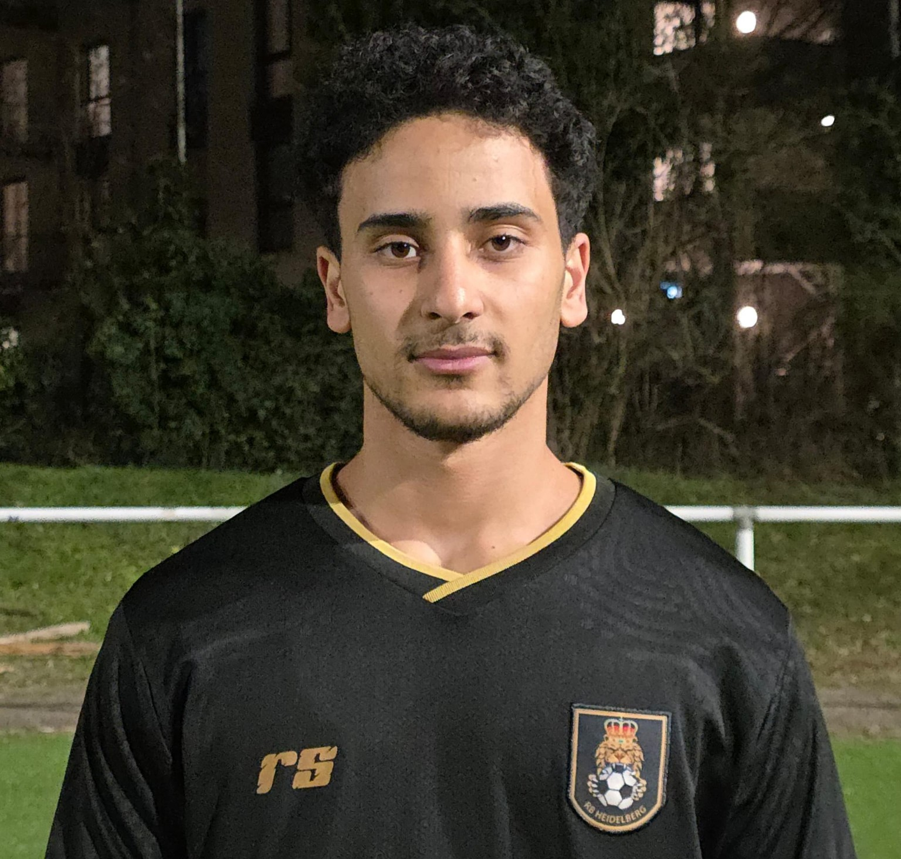
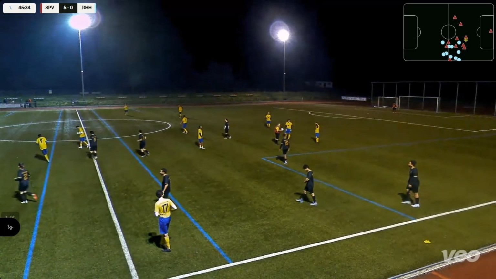
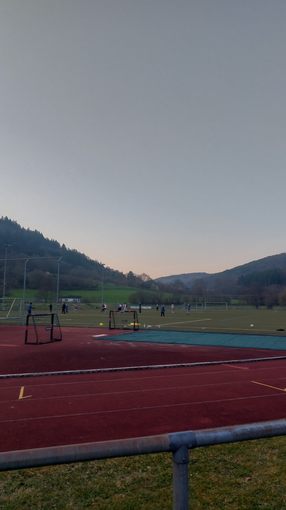
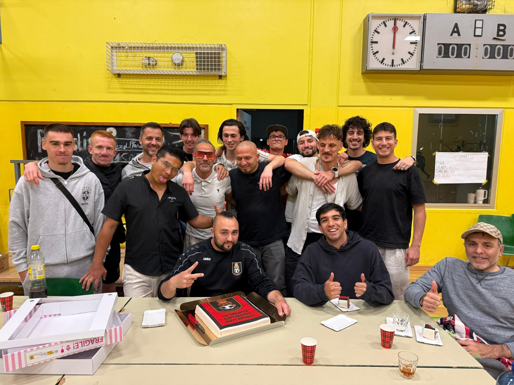

Speed
Explosive runs and fast transitions.
Football Portfolio
Left Winger · Right Foot
Speed · Positioning · Finishing · Dribbling

About Me
I am Chokri Ghiloufi, a 21-year-old footballer currently playing for RB Heidelberg in Germany. I play mainly as a left winger and focus on speed, positioning, finishing, and dribbling to create danger in attack.
I previously played for A.S.K. Kasserine in Tunisia and continue working every day to develop my level and earn opportunities at higher clubs.
Strengths
Explosive runs and fast transitions.
Smart attacking movement in wide areas.
Confident in goal-scoring situations.
Direct 1v1 play and creative attacking actions.
Career
Current club · Heidelberg, Germany
Previous club · Tunisia
Gallery
Personal photos and football moments.



Contact